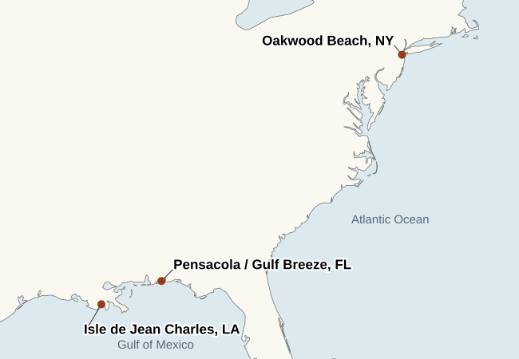
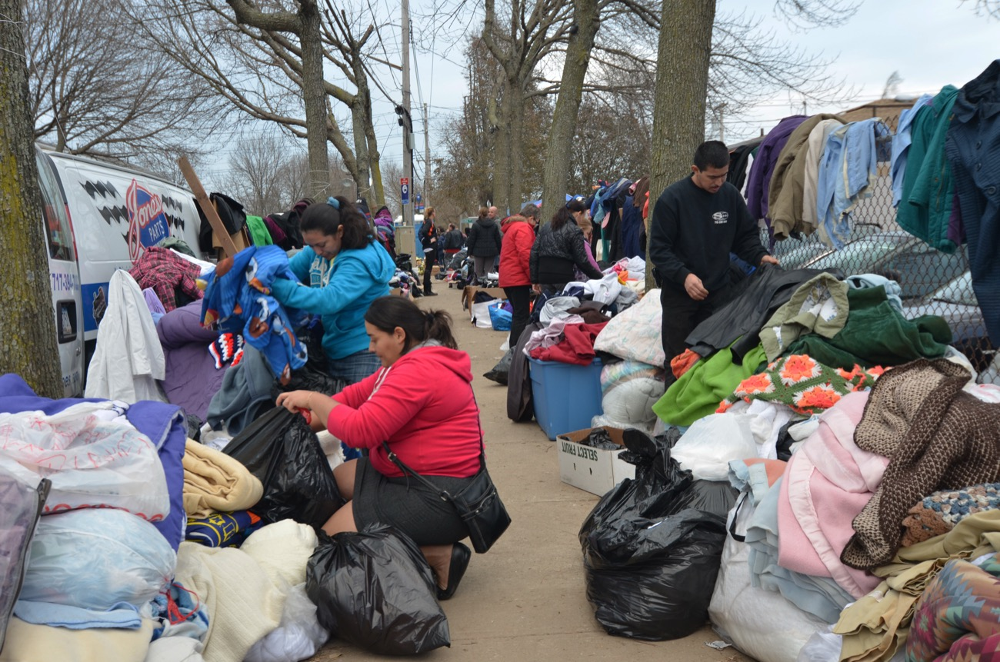

Part Two, pp. 99–164 · Elizabeth Rush · Wednesday, November 11
Isle de Jean Charles, Louisiana. Chris Brunet describes the changing dimensions of the island on p. 164.
The terms of leaving
In Oakwood Beach, residents will sell on one condition: the land must stay open after they leave. In Pensacola, Rush tries to learn why Robert Brown left. On Isle de Jean Charles, Chris Brunet explains his own decision to move. All three accounts concern retreat. In each one, a different person gets to say what the decision means.
Atlantic and Gulf coast locations

Regional locations · Natural Earth, 1:50 million. Pensacola and Gulf Breeze share one marker at this scale.
Hurricane Sandy on Staten Island
On October 29, 2012, seawater pushed into neighborhoods along Staten Island’s eastern shore. On p. 119, Alan Benimoff compares the locations of deaths with the island’s former tidal marshes. These photographs document two stages of recovery along that shore.
Start at Great Kills Park, the hook of land on the eastern shore. Follow the coast northeast toward Midland Beach. The historical wetland patches and the 2012 flood footprint both extend inland along this stretch. On p. 119, Benimoff adds 24 dots, one for each Sandy-related death he mapped on Staten Island. These two maps show the landscape behind his observation. His count comes from the death locations.

Midland Beach · November 10, 2012
Neighbors donated clothing after floodwater entered homes on October 29. FEMA’s photographer recorded water as high as nine feet at Midland Beach. In neighboring Oakwood Beach, Nicole Montalto describes what her family could afford before the storm (p. 109). Here the immediate cost is visible in a household necessity: clothes.
Nearly three months later, the Army Corps of Engineers was still clearing destroyed houses. Debris removal settled what to do with the wreckage. Residents’ organizing on pp. 121–124 addressed a different decision: whether anyone could build on those parcels again.
“People buy what they can afford.”Nicole Montalto, p. 109
Montalto’s father died in Sandy. She faults builders and the city for paving ground that once absorbed water (p. 109). Alan Benimoff plots the deaths against an older shoreline: more than half occurred on former tidal marsh (p. 119).
His map gives a geographic pattern to her account. Her testimony supplies something the map cannot record: what a household could afford when it chose a home.
Oakwood Beach · pp. 121–131
A sale with conditions
On p. 123 Joe recalls residents asking whether the land would be “returned to nature.” A sale to another homeowner would put another family in the same position. The buyout made a different future for the parcel possible.
Rush calls the result “a commons of sorts” (p. 123). A household relinquishes waterfront property. Its neighbors gain open land that can take floodwater again. The residents negotiate that exchange together.
Pensacola · pp. 133–161
The cost of a forecast
On p. 140 Rush explains how subsidized insurance made floodplain development look affordable. On p. 147 Alvin lists the bills his income already has to cover. A more accurate price for flood risk still leaves him with the same income.
On p. 150 the argument changes from prediction to responsibility. Once a flood can be forecast, an uninsured resident can be blamed for the loss. A map can establish exposure. It cannot establish the means to buy protection.
Brunet counts eight generations tied to the island. Then he imagines Juliette and Howard, now teenagers, at his own age. That change of time scale matters: he believes he could live out his life there. His niece and nephew would need the island to sustain them for much longer.
He ends p. 164 counting aloud. A page that began with eight generations ends with the sound of one person measuring from where he sits.
“I think”
Oakwood Beach · p. 132
“The rhizomes, I think, are not the only ones”
A moving truck is filling up with sofas, family photos, and pots and pans. Beside it, Rush sees cordgrass and pictures its underground stems spreading to new ground. The words “I think” interrupt the comparison just as Rush passes from grass to people. The truck tells her someone is leaving. The idea that the family, like the grass, knows when to withdraw is hers.
In Alvin’s living room · p. 141
“This man will not hurt me, I think.”
Alvin has just told Rush that his wife died two years ago. Sitting on his love seat, Rush reassures herself. In the next sentence, Alvin becomes the subject. Rush describes him as harmless and accustomed to being alone. In two sentences she moves from reporting her own fear to telling us what kind of man he is.
Watching the Baton Rouge flood · p. 149
“I wonder if Alvin thinks”
Alvin watches people wading through floodwater on television and tells Rush he has survived a flood himself. Rush is the subject of “wonder.” Alvin is the subject of “thinks.” He has said enough for us to know that he recognizes the experience. Rush takes a further step when she wonders whether he feels a kinship with the people on the screen. Alvin never says whether he does.
Key vocabulary
Backfilled · p. 116Filled with earth or debris. Former wetlands could then be paved and built on.
Commons · p. 123Land whose use is shared. Oakwood residents wanted their parcels to become open ground after the sale.
Premium · p. 140The price charged for an insurance policy. A subsidy can change the price a homeowner pays while the water hazard remains.
Vulnerability · p. 147Susceptibility to harm. Rush describes it as something people inherit through housing, wealth and geography.
Proximity · p. 149Nearness. Rush distinguishes the person physically exposed to water from the institution exposed to financial loss.
Voluntary · p. 159Done by choice. Rush reconsiders the word when the cost of staying makes departure the only affordable option.
Emotion words in Part Two
Relief · p. 121Rush uses this word as retreat begins to sound possible in Oakwood. Leaving can mean an end to waiting for another flood.
Desperation · p. 164Brunet explicitly rules this out as his motive. He describes having time to consider his family’s future.
Fear · p. 164He also rejects fear as the reason for his own decision. Later on the same page he uses the word when imagining what someone else might face.
Uncertain · p. 164The word Brunet does use for himself. He cannot know what the island will offer his niece and nephew at his age.
Readers on Rush’s narration
Wonder and admiration
Anna Clark says the description of Isle de Jean Charles “caught my breath.” The image gives her a way to see the shoreline coming apart. Dave Hage admires the sense that Rush is learning alongside the reader. Clark, Waxwing · Hage, Star Tribune
Distraction and ambivalence
Hage finds the shifts into memoir distracting. Clark writes, “I felt conflicted”: she wants more room to encounter the facts herself, yet recognizes that watching Rush change her mind can show what it takes to imagine leaving home. That tension is visible on p. 159, when Rush interrupts her account of Robert Brown to reconsider her own word, voluntary. Hage’s review · Clark’s review